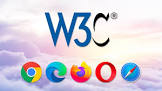

A web e o www são a mesma coisa que siginifica World Wide Web é um sistema de documentos interconectados acessíveis através da internet. Esses documentos são geralmente páginas web que podem conter texto, imagens, vídeos e outros tipos de mídia.
W3c siginifica World Wide Web Consortium é uma comunidade internacional que inclui uma equipe em tempo integral, especialistas do setor e várias organizações membros. Esses grupos trabalham juntos para desenvolver padrões para a World Wide Web.
